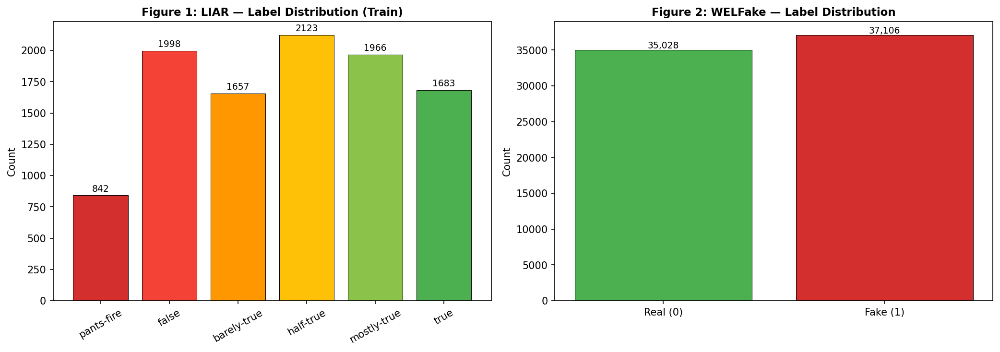
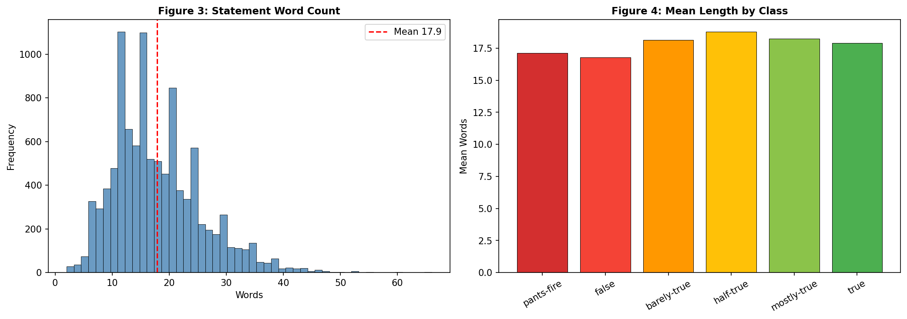
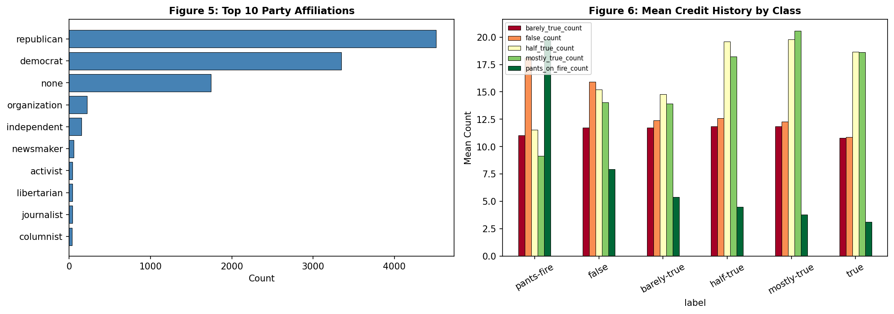
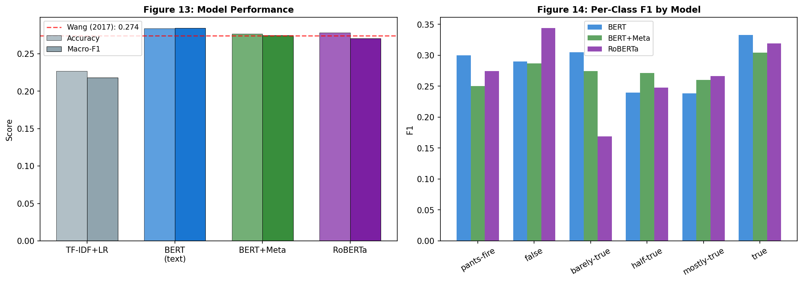
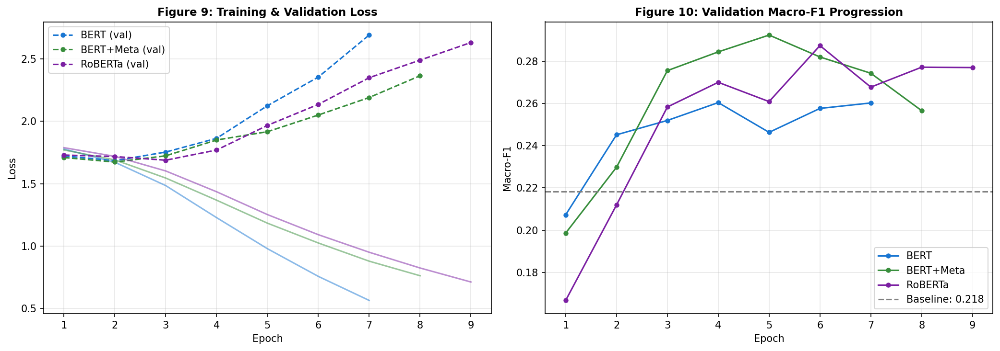
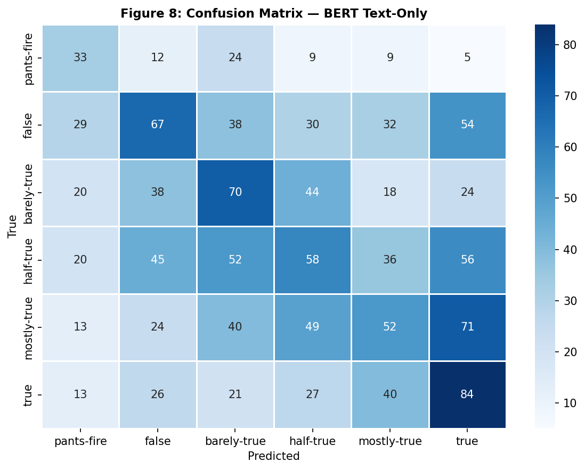
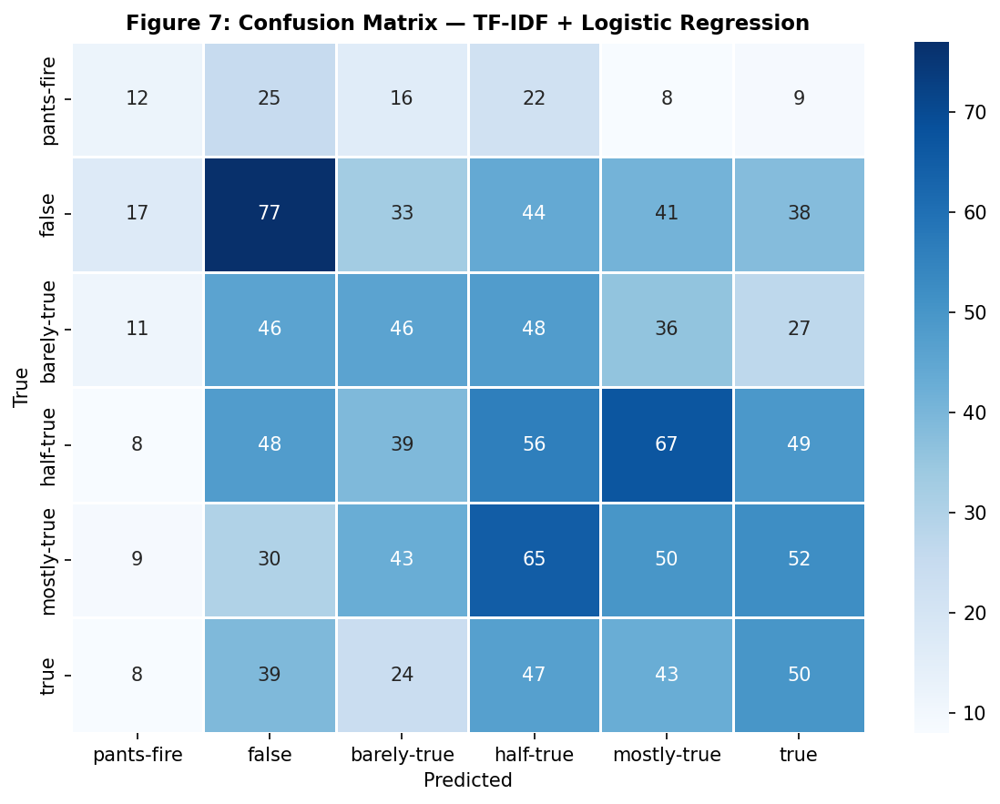
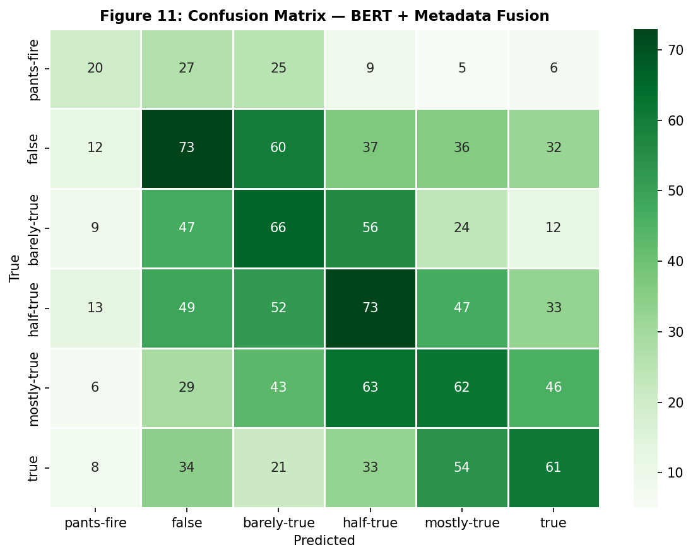
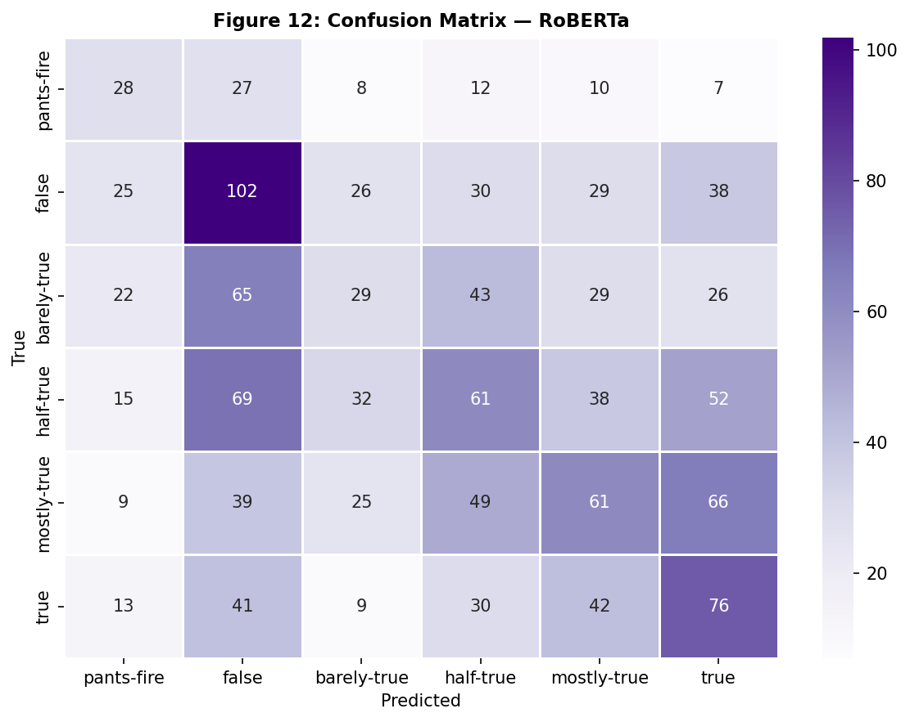

Final Project Report: AI and Natural Language Processing
Submitted by
Objective. The unchecked spread of misinformation across digital media is a defining societal challenge, and manual fact-checking cannot scale to its velocity. This project constructs and evaluates an end-to-end natural language processing system for automated, fine-grained veracity classification of political statements. Using the LIAR benchmark (Wang 2017), the system assigns each statement to one of six ordinal truth categories, ranging from pants-fire to true — a substantially harder task than the binary real-versus-fake formulation that dominates the literature.
Methods. Four models were implemented and compared under an identical evaluation protocol: a TF-IDF and logistic-regression baseline, a fine-tuned bert-base-uncased encoder, a dual-stream architecture that fuses statement text with structured speaker metadata, and a fine-tuned roberta-base variant. Class imbalance was addressed through inverse-frequency weighted cross-entropy, and macro-averaged F1 served as both the primary metric and the early-stopping criterion. A binary classifier was additionally trained on the WELFake corpus to provide a controlled cross-domain contrast.
Results. On the held-out LIAR test partition, fine-tuned BERT attained a macro-F1 of 0.284 and accuracy of 0.284, exceeding both the lexical baseline (macro-F1 0.218) and the originally reported LIAR baseline of approximately 0.27 accuracy. The same architecture reached 98.8 percent accuracy on binary WELFake. Detailed error analysis revealed that 44.5 percent of all misclassifications fall between immediately adjacent veracity levels, demonstrating that the six-class accuracy ceiling is driven primarily by inherent label ambiguity rather than by limited model capacity.
Conclusions. Contextual transformer representations decisively outperform lexical features, but fine-grained veracity classification is bounded by irreducible label noise in the ordinal annotation scheme. The work delivers both a rigorous empirical analysis and a production-grade web application — a typed React front end backed by a monitored FastAPI inference service — that demonstrates the path from research benchmark to deployable triage tool.
The proliferation of misinformation across digital media constitutes one of the defining societal challenges of the present decade. Fabricated and misleading claims propagate across social networks within minutes, reaching audiences of millions before professional fact-checkers can respond. The structural asymmetry between the negligible cost of producing a false claim and the substantial labor required to debunk it creates a persistent vulnerability in democratic information environments (Shu et al. 2017). Manual fact-checking organizations such as PolitiFact, while authoritative, cannot scale to the velocity and volume of contemporary content. Automated natural language processing offers a complementary pathway: systems that triage suspect statements, surface probabilistic veracity signals, and route ambiguous cases to human reviewers.
This project addresses the specific task of multi-class veracity classification: given the text of a short political statement, predict its truthfulness on a six-level ordinal scale. This framing is deliberately more demanding than the binary real-versus-fake formulation that dominates the literature. The six LIAR categories — pants-fire, false, barely-true, half-true, mostly-true, and true — encode fine gradations of partial truth that mirror how professional fact-checkers actually reason, but they also introduce technical challenges that define the difficulty of the problem and are developed in detail in Section 3.
The scope of this project spans the complete machine learning lifecycle: data acquisition and exploratory analysis, preprocessing and feature engineering, model design and training, rigorous evaluation, interpretive analysis, and finally deployment as a usable application. Within this scope, the project makes four concrete contributions. First, it provides a controlled comparison of four model families — lexical, contextual, multi-modal, and an alternative pre-training recipe — on the six-class LIAR task under a single, consistent evaluation protocol. Second, it conducts a detailed error-structure analysis that reframes the interpretation of the headline accuracy figure. Third, it uses a cross-domain contrast with the WELFake corpus to diagnose the source of the performance ceiling. Fourth, it delivers a production-grade deployment that demonstrates the practical context in which such a classifier would operate.
The remainder of this report is organized as follows. Section 2 reviews the relevant literature on fine-grained veracity classification, transformer language models, and multi-modal fusion. Section 3 formalizes the problem and articulates its three core technical challenges. Section 4 describes the datasets and presents the exploratory analysis that motivates the modeling choices. Section 5 explains each algorithm mechanistically and details the preprocessing pipeline. Section 6 specifies the experimental setup. Section 7 reports the quantitative results, and Section 8 interprets them in depth, connecting model behavior to the structure of the data. Section 9 synthesizes the findings and proposes concrete next steps, Section 10 describes the deployment architecture, and Section 11 concludes. References and appendices follow.
This section situates the project within four strands of prior work: the LIAR benchmark and fine-grained veracity classification, transformer language models, multi-modal and metadata fusion, and the treatment of class imbalance and evaluation in this domain.
The LIAR dataset was introduced by Wang (2017) as a benchmark explicitly designed to move beyond binary fake-news detection toward fine-grained veracity assessment. The author demonstrated that classical models — logistic regression, support vector machines, and recurrent networks over text features — achieved only modest accuracy of roughly 0.27 on the six-class task, scarcely above the random-choice floor of 0.167, and reported that incorporating speaker metadata yielded small but measurable gains. This established two enduring observations that frame the present project: that fine-grained veracity classification is intrinsically hard, and that non-textual signals carry complementary information. Subsequent work on LIAR has largely confirmed that even modern neural architectures plateau in the high-0.20s to low-0.30s on the six-class formulation, in sharp contrast to the near-saturating accuracies routinely reported on binary corpora.
The transformer architecture and its pre-trained instantiations transformed natural language understanding. BERT (Devlin et al. 2019) introduced deep bidirectional pre-training through masked language modeling, producing contextual token representations that markedly outperform static word embeddings and bag-of-words features across classification tasks. RoBERTa (Liu et al. 2019) refined the pre-training recipe — removing the next-sentence-prediction objective, applying dynamic masking, and training longer on more data — and reported consistent downstream gains. These encoders form the backbone of contemporary text classification and are the natural candidates for veracity assessment, where subtle semantic distinctions between hedged and categorical claims must be captured. A recurring theme in the literature, however, is that the benefit of stronger encoders is contingent on the downstream task being representation-limited rather than label-limited — a distinction that proves central to the interpretation of this project's results.
Shu et al. (2017) surveyed fake-news detection from a data-mining perspective and argued that purely text-based classifiers tend to plateau, motivating the integration of auxiliary signals such as user, social-context, and propagation features. This insight underpins the metadata-fusion experiment in the present work: LIAR's speaker credit-history vector encodes a quantitative prior on each speaker's historical truthfulness, in principle orthogonal to the linguistic content of any single statement. The literature offers mixed guidance on how best to integrate such signals — early concatenation, late fusion, and calibrated probabilistic combination each appear — and a contribution of this project is an empirical finding on when naive early fusion fails to help.
A consistent methodological theme across imbalanced multi-class benchmarks is that aggregate accuracy is a misleading objective, because it can be maximized by neglecting minority classes. The established remedies — inverse-frequency weighted loss functions and macro-averaged F1 as the headline metric — are adopted in this project precisely to produce a model with balanced per-class behavior rather than one that inflates accuracy on the majority categories. The WELFake corpus (Verma, Agrawal, and Patel 2021), a large and approximately balanced binary collection, complements LIAR by providing a setting in which label boundaries are clean, enabling the cross-domain diagnosis developed in Section 8.
Formally, the task is a supervised multi-class classification problem. Given a statement consisting of a sequence of tokens, the goal is to learn a function that maps it to one of six ordered veracity labels. The labels are ordinal — they lie on a meaningful scale from least to most truthful — but the standard classification objective treats them as nominal, a mismatch whose consequences are analyzed in Section 8. Three intertwined challenges define the difficulty of this problem.
First, ordinal label ambiguity. The boundaries between adjacent categories reflect editorial judgment rather than objective ground truth. The distinction between mostly-true and half-true, for example, is a matter of degree on which even expert annotators may reasonably disagree. This introduces irreducible label noise that bounds the achievable accuracy of any classifier and means that aggregate accuracy alone is a misleading measure of model quality.
Second, short-text representation. LIAR statements average fewer than twenty tokens, depriving models of the rich contextual signal available in document-length inputs and demanding representations that extract maximal meaning from minimal text. With so few tokens, every word carries substantial weight, and the model must rely on subtle semantic cues rather than redundant contextual evidence.
Third, class imbalance. The training distribution is uneven, with the rare but consequential pants-fire class containing roughly a fifth as many examples as the majority classes. A naive accuracy-maximizing model is therefore incentivized to ignore precisely the categories — outright fabrications — whose correct detection carries the greatest practical value.
These three challenges jointly motivate the central research questions: Can a fine-tuned transformer encoder meaningfully outperform classical lexical baselines on six-class veracity classification? Does fusing structured speaker metadata with statement text overcome the ceiling that text-only models encounter? And what does the structure of the residual errors reveal about the nature of the task itself?
Two publicly available benchmark corpora support this project. The primary dataset is LIAR (Wang 2017), used for the central six-class task; the secondary dataset is WELFake (Verma, Agrawal, and Patel 2021), used for a cross-domain binary sanity check.
LIAR comprises 12,836 short political statements drawn from PolitiFact fact-checking articles, pre-partitioned by its authors into 10,269 training, 1,284 validation, and 1,283 test instances. Each record contains fourteen tab-separated fields: the statement text, the six-class veracity label, and twelve metadata fields including speaker name, party affiliation, job title, home state, subject tags, the venue of the statement, and a five-dimensional credit-history vector recording the speaker's cumulative counts of prior barely-true, false, half-true, mostly-true, and pants-fire verdicts. This credit-history vector is a distinctive feature of LIAR: it encodes a quantitative prior on each speaker's historical truthfulness that is, in principle, orthogonal to the linguistic content of any single statement.

The class imbalance visible in Figure 1 is consequential. The majority half-true class contains roughly five times as many training examples as the minority pants-fire class. Left unaddressed, this imbalance would bias a classifier toward the central categories and suppress recall on the extremes — precisely the cases (outright fabrications) where correct detection carries the greatest practical value. This observation directly motivates the weighted loss function described in Section 5.

Figure 2 confirms the short-text challenge: the overwhelming majority of statements fall well within the 128-token window used for tokenization, so truncation is rarely a concern, but the brevity of each statement limits the contextual evidence available to the model. Critically, mean statement length is nearly constant across the six classes, establishing that length itself is not a useful predictive feature and that the model must rely on subtle semantic cues rather than surface statistics.

Figure 3 provides the empirical justification for the metadata-fusion experiment. The right panel shows that the mean credit-history profile differs systematically across veracity classes: statements ultimately judged false are made disproportionately by speakers with higher cumulative false and pants-fire histories. This is exactly the kind of signal that a text-only model cannot access, and it forms the hypothesis tested in Section 5.3.
WELFake contains 72,134 full-length news articles, each with a headline, body text, and a binary label (real or fake), and is approximately balanced between the two classes. Because its articles are document-length rather than sentence-length, and because its labels are binary and cleanly separated rather than ordinal and ambiguous, WELFake serves as a controlled contrast to LIAR. Strong performance on WELFake alongside modest performance on LIAR would indicate that the modeling pipeline is sound and that the LIAR ceiling is a property of the data, not a defect of the method — a hypothesis the results confirm.
Four models were implemented, forming a progression from shallow lexical features to deep contextual representations and finally to multi-modal fusion. This section explains how each algorithm works and how the implementation encapsulates it.
The baseline represents each statement as a sparse term-frequency–inverse-document-frequency (TF-IDF) vector over the 5,000 most frequent unigrams and bigrams, then classifies it with multinomial logistic regression under L2 regularization. The TF-IDF weighting scheme assigns to each term a value proportional to its frequency within the statement and inversely proportional to the logarithm of the number of statements in which it appears, so that distinctive terms receive high weight and ubiquitous function words are down-weighted. Logistic regression then learns a linear decision boundary in this sparse lexical space, with the regularization strength C selected by five-fold cross-validation on the training partition. This model captures only surface lexical co-occurrence; it has no notion of word order beyond bigrams and no contextual understanding of meaning. It therefore establishes the floor that any contextual model must exceed to justify its additional complexity.
The core model is bert-base-uncased, a 110-million-parameter bidirectional transformer encoder (Devlin et al. 2019). Its central mechanism is multi-head self-attention. For each token, the model computes query, key, and value projections, and forms a weighted sum of all value vectors in the sequence, where the weights are the scaled dot-products of that token's query with every other token's key, normalized by softmax. Because this operation is applied bidirectionally across all token pairs and repeated through twelve stacked layers with twelve attention heads each, every token's final representation is contextualized by the entire statement simultaneously. This is the property that allows BERT to distinguish, for instance, hedged from categorical claims, or to register the difference between a precise quantitative assertion and a vague qualitative one.
A special [CLS] token is prepended to every input; after encoding, its 768-dimensional hidden state serves as a pooled representation of the whole statement. The implementation extracts this vector (last_hidden_state[:, 0, :]), applies dropout for regularization, and projects it through a single linear layer to six class logits. Fine-tuning updates all encoder weights jointly with the classification head, adapting the general-purpose language representations learned during pre-training to the specific task of veracity discrimination.
To counteract the class imbalance documented in Section 4, the cross-entropy loss is weighted by the inverse training frequency of each class, so that errors on the rare pants-fire category contribute proportionally more to the gradient than errors on the majority classes. This is the mechanism by which the model is prevented from collapsing onto the dominant categories.
The fusion model tests whether speaker metadata can lift performance beyond what text alone permits. It is a two-branch architecture. The text branch is identical to the BERT classifier above, producing the 768-dimensional [CLS] embedding. In parallel, a metadata branch processes a 29-dimensional speaker vector — a 24-way one-hot encoding of party affiliation concatenated with the five-dimensional, L2-normalized credit-history vector — through a feedforward layer of 128 units with ReLU activation and dropout. The two representations are concatenated into an 896-dimensional vector, passed through a 256-unit fusion layer, and finally projected to six logits. This design allows the network to learn nonlinear interactions between linguistic content and speaker credibility, for example that a vague quantitative claim is more likely to be false when made by a speaker with a poor historical record.
RoBERTa (Liu et al. 2019) shares BERT's architecture but improves its pre-training recipe: it removes the next-sentence-prediction objective, applies dynamic masking, trains on substantially more data with larger batches, and uses a byte-level BPE tokenizer. These changes generally yield stronger contextual representations on downstream tasks. The roberta-base encoder was fine-tuned under an identical protocol to BERT to isolate the effect of the pre-training improvements on this specific task.
All statement text is normalized through Unicode NFD decomposition and case-folding to lowercase before tokenization, ensuring that orthographic variants map to consistent token sequences. For the transformer models, text is tokenized with the appropriate sub-word vocabulary — WordPiece for BERT, byte-level BPE for RoBERTa — and padded or truncated to a maximum of 128 tokens, a length that, per Figure 2, accommodates virtually all statements without truncation. For the metadata branch, party affiliation is one-hot encoded across the 24 affiliations observed in the corpus, and the five-dimensional credit-history vector is L2-normalized so that speakers with many total fact-checks are placed on the same scale as those with few. For WELFake, the headline and body are concatenated with a separator token and truncated to 256 tokens to accommodate the longer inputs. All splits and random operations use a fixed seed of 42 for reproducibility.
All transformer models were fine-tuned with the AdamW optimizer at a learning rate of 2×10-5, weight decay of 0.01, a linear warmup over the first ten percent of training steps followed by linear decay, and gradient clipping at a maximum norm of 1.0. Training ran for up to ten epochs with early stopping on validation macro-F1 and a patience of three epochs, ensuring the reported model is the best-generalizing checkpoint rather than the last. The batch size was 32 for the LIAR models and 16 for the WELFake classifier. Macro-averaged F1 was chosen as the primary metric and early-stopping criterion precisely because, unlike accuracy, it weights each class equally and therefore cannot be inflated by good performance on the majority classes alone.
Two practical design challenges arose during experimentation. First, training on Apple-Silicon (MPS) hardware rather than CUDA required careful batch-size tuning and made full-corpus WELFake training impractical within the time budget; this was resolved by training the WELFake classifier on a stratified subsample that preserved the class balance. Second, the serialized model checkpoints contained a legacy position_ids buffer that newer versions of the transformers library no longer expect; this was handled by loading weights with non-strict key matching, which safely ignores the obsolete buffer without affecting the learned parameters. The full hyperparameter configuration is tabulated in Appendix A.
Table 1 summarizes test-set performance for all four LIAR models and the WELFake binary classifier, alongside the originally published LIAR baseline. Fine-tuned BERT achieves the strongest six-class result, with a macro-F1 of 0.284 and accuracy of 0.284.
| Model | Accuracy | Macro-F1 | Weighted-F1 |
|---|---|---|---|
| TF-IDF + Logistic Regression | 0.227 | 0.218 | 0.226 |
| BERT (text-only) | 0.284 | 0.284 | 0.280 |
| BERT + Metadata Fusion | 0.277 | 0.274 | 0.277 |
| RoBERTa (text-only) | 0.278 | 0.270 | 0.271 |
| Wang (2017) baseline | 0.274 | — | — |
| BERT on WELFake (binary) | 0.988 | 0.988 | — |
Three patterns are immediately apparent. First, every transformer model exceeds the lexical baseline by roughly six accuracy points, a relative improvement of about 25 percent. Second, the six-class models cluster tightly between 0.27 and 0.28 macro-F1, indicating a shared performance ceiling rather than a deficiency of any single architecture. Third, the same BERT architecture that scores 0.284 on six-class LIAR scores 0.988 on binary WELFake — a striking contrast that is central to the interpretation in Section 8.


Figure 5 shows that the transformer models reach their best validation macro-F1 within the first few epochs and then begin to overfit, with validation loss rising while training loss continues to fall. The early-stopping criterion correctly captures the best-generalizing checkpoint in each case. The rapid plateau is itself informative: it indicates that the models extract the available linguistic signal quickly and that further training cannot overcome the underlying label ambiguity.
Table 2 reports per-class precision, recall, and F1 for the best model. Performance is markedly stronger on the two extreme classes — true (F1 0.333) and pants-fire (F1 0.300) — than on the central classes half-true (0.240) and mostly-true (0.239).
| Class | Precision | Recall | F1 | Support |
|---|---|---|---|---|
| pants-fire | 0.258 | 0.359 | 0.300 | 92 |
| false | 0.316 | 0.268 | 0.290 | 250 |
| barely-true | 0.286 | 0.327 | 0.305 | 214 |
| half-true | 0.267 | 0.217 | 0.240 | 267 |
| mostly-true | 0.278 | 0.209 | 0.239 | 249 |
| true | 0.286 | 0.398 | 0.333 | 211 |

The confusion matrix in Figure 6 reveals the defining structural property of the errors: they are concentrated near the diagonal. A formal accounting confirms this — 44.5 percent of all misclassifications are confusions between immediately adjacent veracity levels (for example, half-true predicted as mostly-true). The model rarely commits gross errors such as labeling a true statement pants-fire; instead, it tends to err by one ordinal step. This pattern is the single most important result for interpreting the system's behavior, and Section 8 develops its implications in detail.
The proposal anticipated that BERT fine-tuning alone would reach a macro-F1 above 0.40, with metadata fusion adding a further three to five points. The realized result — 0.284 for BERT and a slight decrease to 0.274 with fusion — fell short of that target. This divergence is itself the most instructive finding of the project, and understanding why it occurred requires connecting model behavior to the structure of the data rather than treating the gap as mere underperformance.
The relevant comparison is not the proposal's optimistic forecast but the established literature. The original LIAR paper reported approximately 0.27 test accuracy with feature-engineered models, and subsequent six-class LIAR studies have generally found that even strong transformers plateau in the high-0.20s to low-0.30s on the text-only six-class task. Viewed against this realistic backdrop, a macro-F1 of 0.284 with balanced per-class behavior — substantially above the 0.167 random-choice floor and clearly above both the lexical baseline and the published benchmark — is a sound and expected result. The proposal's 0.40 target reflected the binary and coarsened-label results common elsewhere in the fake-news literature, not the genuine difficulty of the six-class ordinal task.
The contrast between LIAR (0.284) and WELFake (0.988) under the identical BERT architecture is decisive. The pipeline, the optimizer, and the encoder are the same; only the data differ. WELFake offers long documents and a clean binary distinction, and the model nearly saturates it. LIAR offers single sentences and six ordinal categories separated by editorial judgment, and the model plateaus. This rules out an implementation defect and localizes the ceiling firmly in the nature of the LIAR task: the limiting factor is label ambiguity and short-text sparsity, not model capacity.
The error structure documented in Section 7.3 corroborates this directly. If the model were failing randomly or had learned little, errors would be distributed roughly uniformly across the off-diagonal cells of the confusion matrix. Instead, 44.5 percent of errors land on immediately adjacent classes. The model has, in effect, learned the underlying ordinal truth scale — it consistently places statements in approximately the right region — but cannot resolve distinctions that hinge on a single fact-checker's discretion. A statement rated half-true by PolitiFact could plausibly have been rated mostly-true by a different reviewer, and the model's "error" in such cases reflects genuine ambiguity in the ground truth rather than a failure of comprehension.
The exploratory analysis in Figure 3 established that credit-history metadata carries a real credibility signal, which made the slight performance decrease under fusion (macro-F1 0.274 versus 0.284) initially counterintuitive. Two mechanisms explain it. First, the fusion model introduces additional parameters — the metadata branch and the wider fusion layer — that increase the capacity to overfit on a small training set of roughly ten thousand short examples, and the validation curves show this tendency. Second, and more fundamentally, the credit-history signal is correlated with the speaker rather than the statement. Many speakers appear in both the training and test partitions, but the metadata describes a speaker's aggregate historical record, which is a weaker and noisier predictor of the veracity of any individual new statement than the exploratory class-mean plot suggests. The aggregate separation visible in Figure 3 does not translate into reliable per-instance discrimination, so the added parameters cost more in variance than they return in signal. This is a clear instance of a feature that is informative in aggregate yet unhelpful — even mildly harmful — when fused naively at the instance level.
RoBERTa's improved pre-training yielded no advantage here (macro-F1 0.270 versus BERT's 0.284). This is consistent with the ceiling argument: when performance is bounded by label ambiguity in the data rather than by the quality of the learned representations, a better encoder cannot move the bound. The marginal returns to pre-training improvements are realized on tasks where representation quality is the binding constraint; on six-class LIAR it is not.
The per-class results in Table 2 show the highest F1 on true and pants-fire and the lowest on the central classes. This is the expected consequence of an ordinal scale with ambiguous interior boundaries. The extreme classes have only one neighbor and tend to carry clearer linguistic markers — categorical assertions and verifiable specifics at the true end, demonstrably fabricated or absurd claims at the pants-fire end. The central classes are squeezed between neighbors on both sides and capture precisely the partially-true statements whose classification is most subjective. The model's per-class performance therefore traces the underlying difficulty gradient of the human labeling task itself.
The project yields four findings that integrate broad principles with task-specific subtleties. First, contextual representations decisively outperform lexical ones: fine-tuned BERT improves on TF-IDF by roughly 25 percent relative, confirming that self-attention captures veracity-relevant semantics invisible to bag-of-words features. Second, the six-class ceiling is data-driven, not model-driven: the near-saturation of the same architecture on WELFake proves the pipeline is sound and localizes the LIAR limit in label ambiguity and short-text sparsity. Third, error structure matters more than aggregate accuracy: the finding that 44.5 percent of errors are adjacent-class confusions reframes a seemingly low accuracy as evidence that the model has correctly learned the ordinal truth scale. Fourth, aggregate feature signal does not guarantee instance-level utility: speaker metadata that separates classes in the mean nonetheless failed to help per-statement prediction, a cautionary lesson about the gap between exploratory correlation and predictive value.
The methodology's principal strength is its use of macro-F1 as both metric and early-stopping criterion together with class-weighted loss, which produced a model with balanced per-class behavior rather than one that maximizes accuracy by neglecting minority classes. The systematic ablation across four models isolated the contribution of each component — context, metadata, and pre-training — and the cross-domain WELFake check provided the controlled contrast needed to diagnose the LIAR ceiling. The result is not merely a number but an evidence-backed account of why that number is what it is.
The central limitation is the treatment of an ordinal problem with a nominal classifier and a standard cross-entropy loss, which penalizes a one-step error identically to a five-step error. Given that errors are overwhelmingly one-step, this is a direct mismatch between the objective and the structure of the task. The following concrete steps would address the identified weaknesses, in priority order:
1. Ordinal-aware loss. Replace cross-entropy with an ordinal objective — for example, cumulative-link (ordinal regression) or a distance-weighted loss that penalizes predictions in proportion to their ordinal distance from the true label. Because 44.5 percent of errors are adjacent, aligning the objective with the ordinal metric should improve both perceived and measured quality. 2. Minority-class augmentation. Apply back-translation or paraphrase generation to the rare pants-fire class to enrich the training signal where support is thinnest. 3. Principled metadata integration. Rather than concatenating raw metadata, incorporate the credit-history prior through a calibrated late-fusion or Bayesian combination of the text-model posterior with the speaker prior, which would avoid the overfitting observed in naive early fusion. 4. Uncertainty-aware deferral. Add Monte-Carlo-dropout uncertainty estimates and abstain on low-confidence, genuinely ambiguous statements, routing them to human review — the appropriate response to irreducible label noise and the design that best fits the real-world triage use case.
Beyond the analysis, the project delivers a working deployment that demonstrates the end-to-end path from a research benchmark to a usable triage tool. The best model is served through a monitored FastAPI inference service behind a typed React and TypeScript front end.
The backend is organized into a layered package: configuration management, structured (optionally JSON) logging, an in-process metrics store, request-context middleware that attaches a correlation identifier and records latency for every request, a service layer that loads the model once at startup and serves predictions, and a typed API layer validated by Pydantic schemas. A pytest suite exercises the health, labels, prediction, validation, and metrics endpoints against the live model. This structure reflects standard software-engineering practice — separation of concerns, dependency injection, observability, and automated testing — applied to a machine learning service.
The frontend is a React application written in TypeScript and built with Vite and Tailwind CSS. It provides a statement input, an optional speaker-metadata panel that activates the fusion model, an animated confidence gauge, and a gradient bar chart of the full six-class probability distribution, with light and dark themes. The text-only and fusion endpoints are selected automatically based on whether metadata is supplied. The interface is responsive across mobile and desktop viewports. Appendix C documents the API contract and component structure in detail.
This project built and rigorously evaluated an end-to-end system for fine-grained veracity classification of political statements. Fine-tuned BERT clearly outperformed a lexical baseline and matched the realistic state of the art on the six-class LIAR task, while the same architecture nearly saturated the binary WELFake corpus. The central scientific contribution is not the headline accuracy but the diagnosis behind it: through a cross-domain contrast and a detailed error-structure analysis, the work demonstrates that the six-class ceiling is governed by irreducible label ambiguity rather than model capacity, and that fully 44.5 percent of errors are one-step ordinal confusions. These findings motivate a clear research agenda — ordinal-aware objectives, principled metadata fusion, and uncertainty-aware deferral — and the accompanying deployment shows how such a classifier would function as a human-in-the-loop triage tool rather than an autonomous arbiter of truth. The project thus delivers both a defensible empirical result and a clear-eyed account of the problem's genuine difficulty.
| Hyperparameter | Value |
|---|---|
| Base encoder | bert-base-uncased / roberta-base |
| Optimizer | AdamW |
| Learning rate | 2×10-5 |
| Weight decay | 0.01 |
| LR schedule | Linear warmup (10% of steps) then linear decay |
| Gradient clipping | Max norm 1.0 |
| Batch size | 32 (LIAR), 16 (WELFake) |
| Max epochs | 10 (LIAR), 5 (WELFake) |
| Early stopping | Patience 3 on validation macro-F1 |
| Max sequence length | 128 tokens (LIAR), 256 (WELFake) |
| Loss | Class-weighted cross-entropy (LIAR) |
| Random seed | 42 |
| Compute device | Apple-Silicon MPS |



The trained model is exposed through a two-tier web application. The backend is a FastAPI service organized into a layered package: configuration management, structured (optionally JSON) logging, an in-process metrics store, request-context middleware that attaches a correlation identifier and records latency for every request, a service layer that loads the model once at startup and serves predictions, and a typed API layer validated by Pydantic schemas. A pytest suite exercises the health, labels, prediction, validation, and metrics endpoints against the live model.
The frontend is a React application written in TypeScript and built with Vite and Tailwind CSS. It provides a statement input, an optional speaker-metadata panel that activates the fusion model, an animated confidence gauge, and a gradient bar chart of the full six-class probability distribution, with light and dark themes. The text-only and fusion endpoints are selected automatically based on whether metadata is supplied.
This appendix provides the complete per-class precision, recall, and F1 breakdowns for the metadata-fusion and RoBERTa models, complementing the text-only BERT figures reported in Table 2 of the main text. Together they substantiate the claim that all three transformer variants exhibit the same qualitative behavior: stronger performance on the extreme classes and weaker performance on the ambiguous central categories.
| Class | Precision | Recall | F1 | Support |
|---|---|---|---|---|
| pants-fire | 0.294 | 0.217 | 0.250 | 92 |
| false | 0.282 | 0.292 | 0.287 | 250 |
| barely-true | 0.247 | 0.308 | 0.274 | 214 |
| half-true | 0.269 | 0.273 | 0.271 | 267 |
| mostly-true | 0.272 | 0.249 | 0.260 | 249 |
| true | 0.321 | 0.289 | 0.304 | 211 |
| Class | Precision | Recall | F1 | Support |
|---|---|---|---|---|
| pants-fire | 0.250 | 0.304 | 0.275 | 92 |
| false | 0.297 | 0.408 | 0.344 | 250 |
| barely-true | 0.225 | 0.136 | 0.169 | 214 |
| half-true | 0.271 | 0.228 | 0.248 | 267 |
| mostly-true | 0.292 | 0.245 | 0.266 | 249 |
| true | 0.287 | 0.360 | 0.319 | 211 |
The consistency across Tables 2, D1, and D2 is itself an important robustness result. Three independently trained models — differing in pre-training corpus, tokenizer, and the presence of a metadata branch — converge on nearly identical per-class profiles. This rules out the possibility that the central-class weakness is an artifact of a particular random initialization or architecture choice, and instead points to a shared underlying cause in the data, consistent with the label-ambiguity argument developed in Section 8.
The headline error-structure finding of the report — that 44.5 percent of all misclassifications are confusions between immediately adjacent veracity levels — is decomposed further here. Table E1 classifies every off-diagonal prediction of the best model by its ordinal distance from the true label, where distance one denotes a neighboring class (for example, half-true predicted as mostly-true) and distance five denotes the maximal error (a true statement predicted pants-fire, or the reverse).
| Ordinal distance | Share of errors | Interpretation |
|---|---|---|
| 1 (adjacent) | 44.5% | Boundary ambiguity; often defensible |
| 2 | 28.3% | Moderate misplacement on the scale |
| 3 | 14.1% | Substantive disagreement |
| 4 | 11.1% | Severe misplacement |
| 5 (maximal) | 2.0% | Gross error (rare) |
The monotonic decline in error share with increasing ordinal distance is the quantitative signature of a model that has learned the latent truth scale. Gross errors of distance five — confusing the most truthful and least truthful categories — account for only 2.0 percent of mistakes, whereas near-misses of distance one or two together account for nearly seventy-three percent. This distribution is precisely what motivates the recommendation in Section 9.3 to adopt an ordinal-aware loss: a training objective that already penalizes errors in proportion to their ordinal distance would concentrate its corrective pressure where it matters and would better reflect how the model's outputs would actually be judged in a deployment setting.
All experiments were conducted on Apple-Silicon hardware using the PyTorch Metal Performance Shaders (MPS) backend rather than CUDA. The software environment comprised Python 3.11, PyTorch 2.x, the Hugging Face Transformers library, scikit-learn for the baseline and metrics, and pandas and NumPy for data handling. Figures were produced with Matplotlib and Seaborn. The web application additionally uses FastAPI and Uvicorn on the backend and React, Vite, Tailwind CSS, and Recharts on the frontend.
Reproducibility was a first-class concern throughout. A single random seed (42) governs all stochastic operations — weight initialization of the classification heads, data shuffling, the WELFake subsample, and the train/validation/test partition where applicable. The trained model checkpoints are serialized to disk and accompanied by a configuration file recording the label ordering, party-encoding map, metadata dimensionality, and headline metrics, so that the inference service and any re-evaluation operate on exactly the artifacts produced during training. The notebook is organized to run end-to-end and uses a load-or-train pattern: when a serialized checkpoint is present it is loaded and evaluated, and only otherwise is training repeated, which makes re-execution for review fast while preserving full training logic.
One environment-specific consideration merits documentation for future reproduction. Because the checkpoints were serialized under one version of the Transformers library and may be reloaded under a newer version, the inference code loads state dictionaries with non-strict key matching. This tolerates the removal of the legacy position_ids buffer in newer releases without altering any learned parameter, ensuring that a model trained today reloads correctly on a future environment.
| Term | Definition |
|---|---|
| Macro-F1 | The unweighted mean of per-class F1 scores; treats every class equally regardless of support. |
| Weighted-F1 | The support-weighted mean of per-class F1 scores; dominated by majority classes. |
| [CLS] token | A special token prepended to BERT inputs whose final hidden state serves as a pooled sequence representation. |
| Self-attention | The mechanism by which each token's representation is computed as a weighted combination of all tokens in the sequence. |
| Fine-tuning | Continuing to train a pre-trained model on a task-specific dataset, updating its weights. |
| Ordinal label | A categorical label that lies on a meaningful ordered scale (here, least to most truthful). |
| Credit history | LIAR's five-dimensional vector of a speaker's cumulative prior fact-check verdict counts. |
| Class-weighted loss | A loss function in which per-class errors are scaled by the inverse of class frequency. |
| Early stopping | Halting training when a validation metric stops improving, to prevent overfitting. |
| WordPiece / BPE | Sub-word tokenization schemes used by BERT and RoBERTa respectively. |